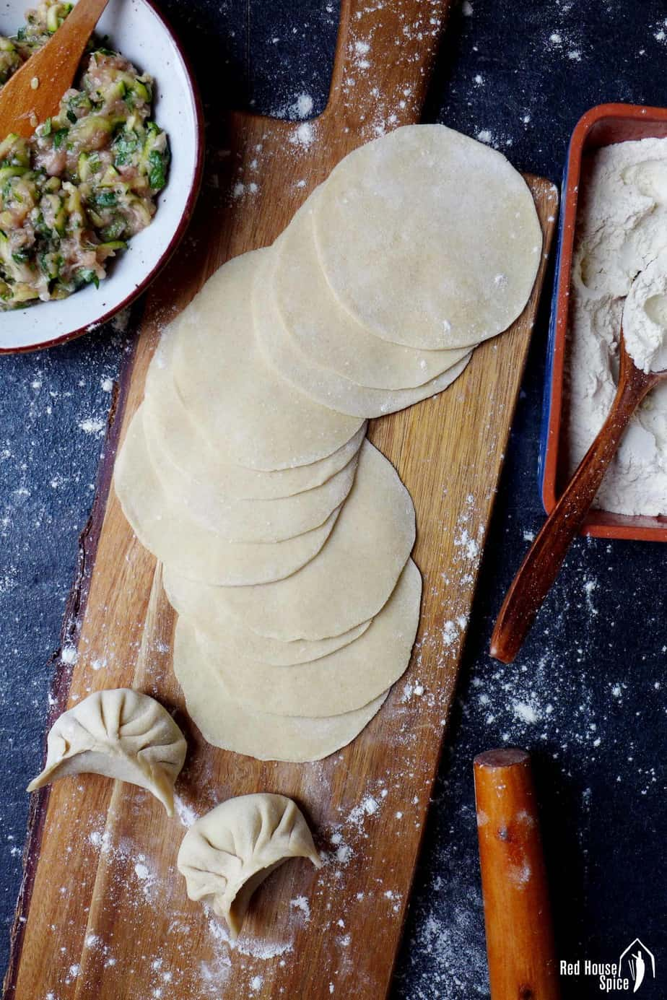

Dumpling Wrappers

Description
A surprisingly quick and easy staple to many different cuisines around the world, and it can be whipped up using some basic pantry staples!
Ingredients
- 250g All Purpose Flour
- 130ml Water
Steps
- Add water to the flour and gently mix until there is no loose flour left. Leave to rest covered for 10-15 minutes
- Knead the combined mixture into a smooth dough ball and then leave to rest for a further 30 minutes.
- Form a loop / donut shape with the mixture, then divide this into four equal parts.
- Divide each section into seven to eight small pieces.
- Each piece can then be rolled into a disc to form the dumping wrapper.